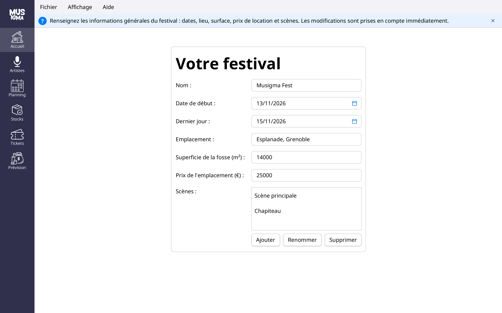
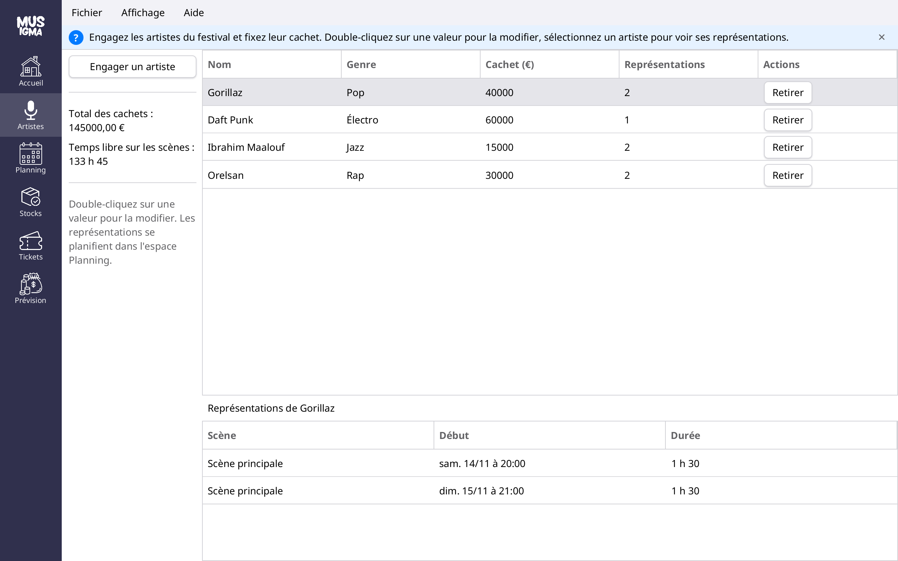
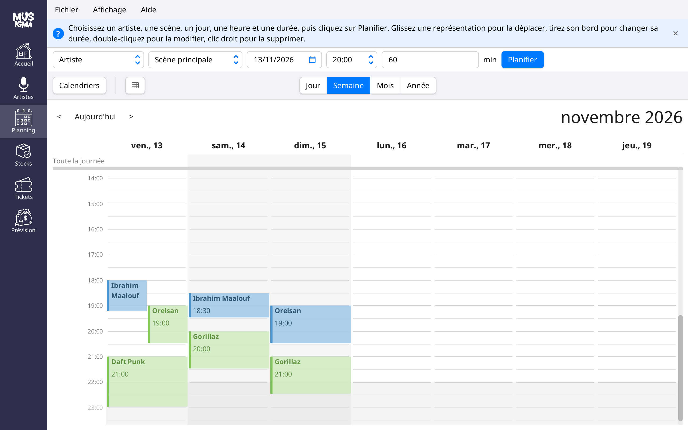
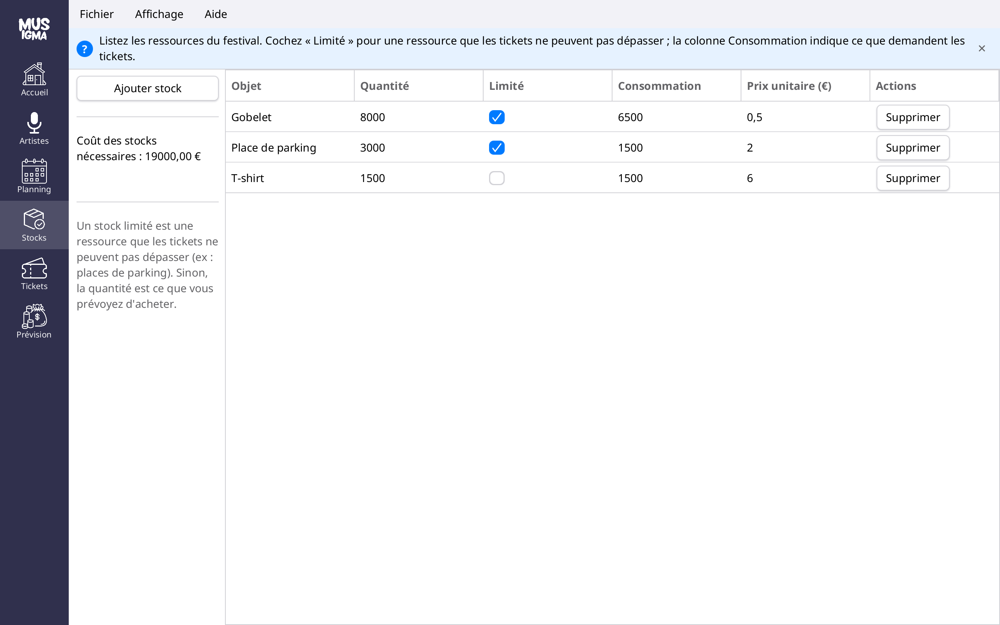
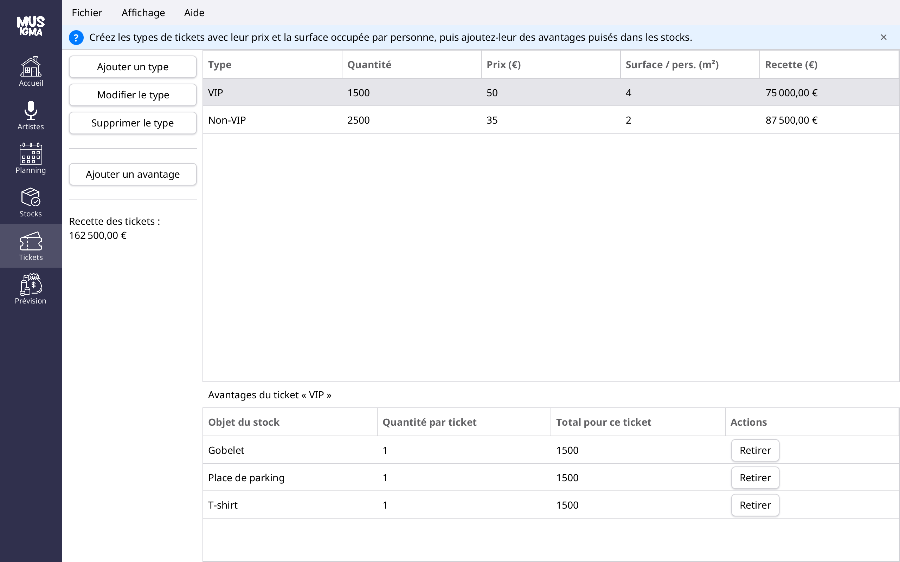
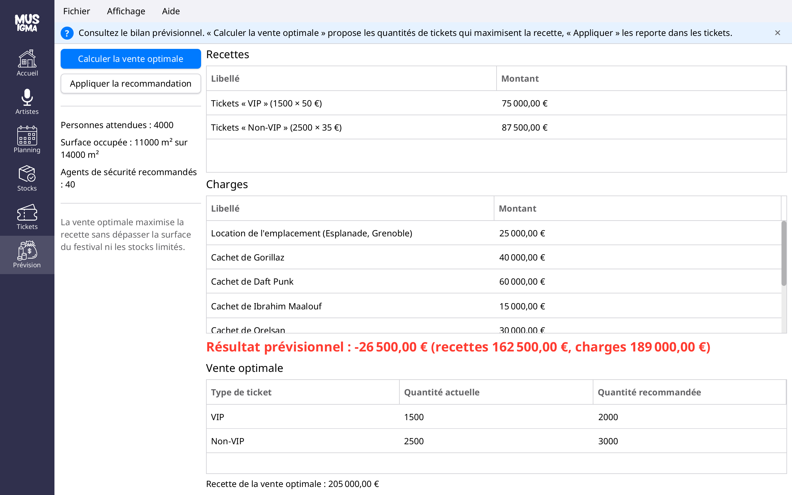

Musigma
Université Grenoble Alpes – IUT2 – Département Informatique
Version 2 – octobre 2026
Lorsque vous lancez Musigma, vous arrivez sur une fenêtre composée de quatre éléments :
Le menu de gauche donne accès à six espaces de travail :
| Espace | Rôle |
|---|---|
| Accueil | Les informations générales du festival : dates, lieu, surface, prix de location et scènes. |
| Artistes | Les artistes engagés, leur genre musical et leur cachet. |
| Planning | Les représentations des artistes, scène par scène. |
| Stocks | Les ressources et fournitures du festival (gobelets, places de parking, T-shirts…). |
| Tickets | Les types de tickets mis en vente et les avantages qu’ils incluent. |
| Prévision | Le bilan prévisionnel et la vente de tickets la plus rentable. |
Survolez un espace du menu de gauche pour afficher une infobulle qui le décrit. La croix à droite de l’aide contextuelle la masque ; vous pouvez la réafficher par le menu Affichage › Aide contextuelle.
La fenêtre peut être redimensionnée et agrandie : l’espace de travail occupe toute la place disponible.
Au premier lancement, Musigma crée un festival vide. Ensuite, il rouvre automatiquement le dernier festival enregistré. Commencez par l’espace Accueil :

Renseignez le nom du festival, son emplacement, la superficie de la fosse (en m²) et le prix de location de l’emplacement. Chaque modification est prise en compte immédiatement ; un champ mal rempli est souligné en rouge avec la raison sous le champ.
Choisissez la date de début et le dernier jour du festival. Changer la date de début décale tout le festival : sa durée et ses représentations suivent. Le dernier jour ne peut pas précéder le début, ni couper une représentation déjà planifiée.
Un festival compte au moins une scène, la « Scène principale ». Les boutons sous la liste permettent d’Ajouter, de Renommer (les représentations suivent le nouveau nom) et de Supprimer une scène. Une scène qui accueille encore des représentations ne peut pas être supprimée.
L’espace Artistes réunit les artistes engagés pour le festival :

À gauche, Musigma affiche le total des cachets et le temps encore libre sur l’ensemble des scènes. Si ce temps devient inférieur à une heure, une confirmation vous est demandée avant d’engager un nouvel artiste.
L’espace Planning présente les représentations dans un calendrier. Chaque scène a sa couleur ; le bouton Calendriers permet d’afficher ou de masquer des scènes. La semaine affichée commence le premier jour du festival.

Dans la barre au-dessus du calendrier, choisissez l’artiste, la scène, le jour, l’heure de début et la durée en minutes, puis cliquez sur Planifier. Seuls les artistes engagés dans l’espace Artistes sont proposés.
Deux représentations ne peuvent pas se chevaucher sur la même scène, et une représentation doit se terminer avant la fin du festival. Une modification qui ne respecte pas ces règles est refusée : un message l’explique et la représentation reprend sa place.
L’espace Stocks liste les ressources du festival :

Ajouter stock demande le nom de l’objet, sa quantité, son prix unitaire et s’il est limité :
La colonne Consommation indique ce que demandent les tickets mis en vente. Si un stock non limité ne suffit pas, le manque est indiqué (ici, 500 T-shirts). Le coût des stocks nécessaires est affiché à gauche. Double-cliquez sur une valeur pour la modifier ; Supprimer retire un stock et les avantages qui l’utilisent, après confirmation.
L’espace Tickets présente les types de tickets en haut et les avantages du type sélectionné en bas :

Ajouter un type demande son nom (unique dans le festival), la quantité mise en vente, son prix et la surface occupée par personne : 0,42 m² par défaut, plus pour un ticket qui offre plus d’espace (par exemple 4 m² pour un VIP). Modifier le type (ou un double-clic sur la ligne) et Supprimer le type agissent sur le type sélectionné.
Un avantage est un objet d’un stock inclus dans le ticket, par exemple un gobelet ou une place de parking. Ajouter un avantage demande le stock et la quantité par ticket. Double-cliquez sur une quantité pour la modifier ; Retirer supprime l’avantage.
Créez d’abord l’objet dans l’espace Stocks. Pour un stock limité, l’ensemble des tickets qui l’utilisent ne peut pas dépasser sa quantité : une quantité de tickets ou d’avantages trop élevée est refusée.
L’espace Prévision présente le bilan prévisionnel du festival :

À gauche s’affichent le nombre de personnes attendues, la surface qu’elles occupent et le nombre d’agents de sécurité recommandé (un pour cent personnes, trois au minimum).
Calculer la vente optimale recherche le nombre de tickets de chaque type qui maximise la recette, sans dépasser la superficie du festival ni les stocks limités. Le résultat s’affiche à côté des quantités actuelles, sans rien modifier. Appliquer la recommandation reporte ces quantités dans les types de tickets et met le bilan à jour.
Dans l’exemple ci-dessus, avec 14 000 m², 8 000 gobelets et 3 000 places de parking, la vente optimale est de 2 000 tickets VIP et 3 000 tickets Non-VIP, pour une recette de 205 000 €.